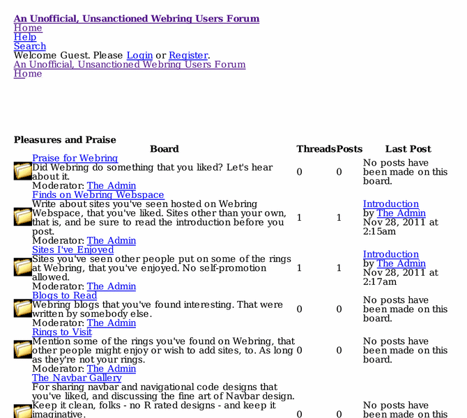

Previewing: An Unofficial, Unsanctioned Webring Users Forum Previewing: An Unofficial, Unsanctioned Webring Users Forum 
Use the left/right red arrow controls to navigate through this ring - Click the preview image to visit the member site.

Drop in and talk about Webring. Civilly. And maybe get some answers to some of your questions, or help other users with theirs?
An Unofficial, Unsanctioned Webring Users Forum owned by:
 rings rings
A member of the original webring since 02/14/2014.
|
|